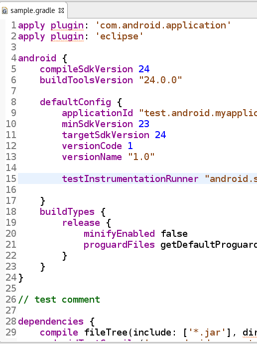
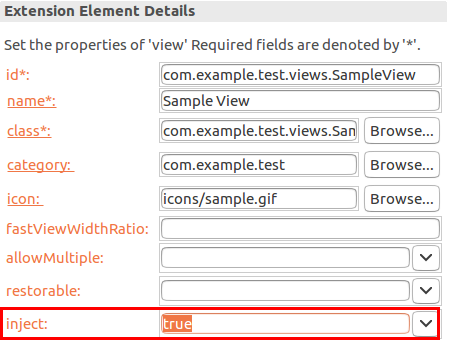
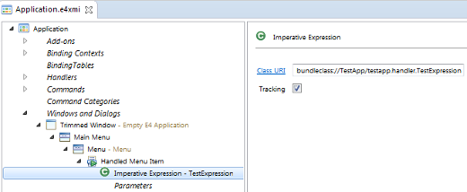
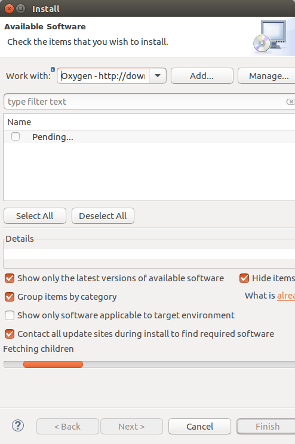
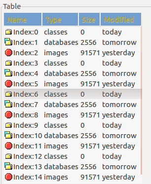
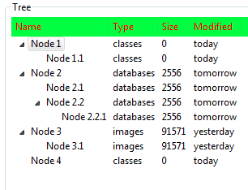
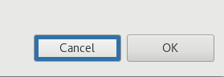

Platform Changes
The following example shows how to contribute features to the generic editor via extensions:
<extension point="org.eclipse.ui.genericeditor.contentAssistProcessors">
<contentAssistProcessor
class="org.eclipse.ui.genericeditor.examples.dotproject.NaturesAndProjectsContentAssistProcessor"
contentType="org.eclipse.ui.genericeditor.examples.dotproject">
</contentAssistProcessor>
</extension>
<extension point="org.eclipse.ui.genericeditor.hoverProviders">
<hoverProvider
class="org.eclipse.ui.genericeditor.examples.dotproject.NatureLabelHoverProvider"
contentType="org.eclipse.ui.genericeditor.examples.dotproject"
id="natureLabelHoverProvider">
</hoverProvider>
</extension>
<extension point="org.eclipse.ui.genericeditor.presentationReconcilers">
<presentationReconciler
class="org.eclipse.ui.genericeditor.examples.dotproject.BlueTagsPresentationReconciler"
contentType="org.eclipse.ui.genericeditor.examples.dotproject">
</presentationReconciler>
</extension>
Those new extension points receive as arguments regular Platform classes (IPresentationReconcilier, ITextHover, ICompletionProposalComputer)
to add behavior to the generic editor. No new Java API is necessary.
public class GradlePR extends PresentationReconciler {
private IToken quoteToken = new Token(new TextAttribute(new Color(Display.getCurrent(), new RGB(139, 69, 19))));
private IToken numberToken = new Token(new TextAttribute(new Color(Display.getCurrent(), new RGB(0, 0, 255))));
private IToken commentToken = new Token(new TextAttribute(new Color(Display.getCurrent(), new RGB(0, 100, 0))));
public GradlePR() {
RuleBasedScanner scanner = new RuleBasedScanner();
IRule[] rules = new IRule[5];
rules[0] = new SingleLineRule("'", "'", quoteToken);
rules[1] = new SingleLineRule("\"","\"", quoteToken);
rules[2] = new PatternRule("//", null, commentToken, (char)0, true);
rules[3] = new NumberRule(numberToken);
rules[4] = new GradleWordRule();
scanner.setRules(rules);
DefaultDamagerRepairer dr = new DefaultDamagerRepairer(scanner);
this.setDamager(dr, IDocument.DEFAULT_CONTENT_TYPE);
this.setRepairer(dr, IDocument.DEFAULT_CONTENT_TYPE);
}
}
Here is the editor in action:

org.eclipse.ui.editors can now receive a new editorContentTypeBinding
child element which allows to define binding of an existing editor for an existing content-type.
Here is an example:
<extension point="org.eclipse.ui.editors">
<editorContentTypeBinding
contentTypeId="org.eclipse.ui.genericeditor.examples.dotproject"
editorId="org.eclipse.ui.genericeditor.GenericEditor">
</editorContentTypeBinding>
</extension>
ImageDescriptor and CompositeImageDescriptor classes in
org.eclipse.jface.resource are now fully ready for HiDPI images. In
Neon (4.6), only ImageDescriptor#createFromURL(URL)
supported high-resolution images.
Clients that use DecorationOverlayIcon will get HiDPI support for free.
Subclasses of CompositeImageDescriptor will have to update their implementation of
#drawCompositeImage(int, int) to use the new #drawImage(ImageDataProvider, int, int)
method to draw the elements of the composite image.
protected void drawCompositeImage(int width, int height) {
// draw overlay in top-right corner:
ImageData imageData = myImageDescriptor.getImageData();
drawImage(imageData, width - imageData.width, 0);
}
HiDPI-aware code:
protected void drawCompositeImage(int width, int height) {
// draw overlay in top-right corner:
CachedImageDataProvider provider =
createCachedImageDataProvider(myImageDescriptor);
drawImage(provider, width - provider.getWidth(), 0);
}
Hint: Use CompositeImageDescriptor#createCachedImageDataProvider(Image/ImageDescriptor) to create an
ImageDataProvider. To calculate the width and height of the image
that is about to be drawn, you can use
CachedImageDataProvider#getWidth()/getHeight(). These methods
already return values in SWT points, so that your code doesn't have to
deal with device-dependent pixel coordinates.
org.eclipse.jface.viewers.DecorationOverlayIcon class has received a new constructor that allows
to more easily define decorated images based on an ImageDescriptor rather than Image. This allows
to prevent API adopters to deal with creation and disposal of the underlying resource when using ImageDescriptor.
Example of API usage:
ImageDescriptor descriptor = /*base image descriptor*/;
return new DecorationOverlayIcon(
descriptor,
PlatformUI.getWorkbench().getSharedImages().getImageDescriptor(ISharedImages.IMG_DEC_FIELD_ERROR),
IDecoration.BOTTOM_LEFT);
org.eclipse.core.resources.builders extension point now allows extensions to influence the
order in which projects are built by supplying an implementation of
IDynamicReferenceProvider. This replaces the
IProjectDescription#setDynamicReferences(IProject[]) API, which is now deprecated.
org.eclipse.jface.text.contentassist.ContentAssistant(boolean asynchronous)
was added. An asynchronous ContentAssistant triggers
computation of completion proposals in the background and doesn't block the thread invoking the completion. As a result, it will prevent the UI thread to freeze
when a completion proposal computer takes too long.
This supports the same API and methods as the usual ContentAssist, so shifting from synchronous/blocking ContentAssistant to asynchronous one only requires
instantiating the ContentAssistant as asynchronous. Note that as the computation now happens in background, the IContentAssistProcessor
attached to an asynchronous ContentAssistant must not require the UI Thread; any IContentAssistProcessor computer requiring the UI Thread will need to be modified
in order to be used with an asynchronous ContentAssistant.
Another new API is ContentAssistant#addContentAssistProcessor(IContentAssistProcessor, String),
which provides a way to directly add multiple processors to one content assistant.
The generic and extensible editor has been switched to use this asynchronous ContentAssistant.
org.eclipse.jface.viewers.ViewerComparator now ignores decorations from a DecoratingLabelProvider during its sorting.
For example, if the EGit team provider is used, it prepends "> " for changed files. This additional "> " is now ignored.
The goal of this change is to eliminate
java.lang.IllegalArgumentException: Comparison method violates its general contract!
that could occur when label decorations were updated in the background.
For now, you can disable this fix by setting the system property eclipse.disable.fix.for.bug364735 to true.
This temporary system property is planned to be removed unless issues with the new sorting are discovered.
IProgressMonitor#setTaskName(String) very frequently in a background job,
the execution was heavily slowed down due to this reporting.
A workaround has been added to the jobs framework that throttles processing of excessive task name updates.
Performance tests have shown 2-3 times faster execution times for pathologic examples.
Currently, the default Eclipse renderers do not use these new elements.
org.eclipse.e4.core.di.extensions and the corresponding ExtendedObjectSupplier implementations have been separated.
The annotations are still available in the org.eclipse.e4.core.di.extensions bundle. The ExtendedObjectSupplier implementations have beend moved
to the new org.eclipse.e4.core.di.extensions.supplier bundle. This makes it easier for platform adopters to change the default implementation by providing a
replacement for the supplier bundle.
For plug-in based products this means that the new org.eclipse.e4.core.di.extensions.supplier bundle needs to be added
the list of included plug-ins. Feature based products should not notice the split.
Note: As part of the re-organization, org.eclipse.e4.core.di.extensions.EventUtils (only intended to be used for internal testing), was moved to
org.eclipse.e4.core.di.internal.extensions.util.EventUtils in the new bundle.
@Service annotation has been added to org.eclipse.e4.core.di.extensions. You can use this annotation to get OSGi services injected by supporting additional service specific features
like getting services with higher service ranking injected automatically, to get the list of services injected for the given type, and to filter for a specific filter by providing an OSGi
LDAP filter.
public class MyPart {
// highest ranked service
@Inject
@Service
MyOsgiService service;
}
public class MyPart {
// all services sorted by ranking
@Inject
@Service
List<MyOsgiService> service;
}
public class MyPart {
// get the highest ranked service that has
// the component property connection=online set
@Inject
@Service(filterExpression="(connection=online)")
MyOsgiService service;
}
org.eclipse.ui.views extension.

Example usage:
public class SampleView extends ViewPart {
@Inject IWorkbench workbench;
private TableViewer viewer;
@Override
public void createPartControl(Composite parent) {
viewer = new TableViewer(parent, SWT.MULTI | SWT.H_SCROLL | SWT.V_SCROLL);
viewer.setContentProvider(ArrayContentProvider.getInstance());
viewer.setInput(new String[] { "One", "Two", "Three" });
viewer.setLabelProvider(new ViewLabelProvider());
// Create the help context id for the viewer's control
workbench.getHelpSystem().setHelp(viewer.getControl(), "test7.viewer");
}
// more stuff
}
org.eclipse.osgi.services have been replaced with the necessary package imports.
Mostly org.osgi.service.event needed to be added to the imported packages. This was necessary to avoid a
uses constraint violation when replacing org.eclipse.equinox.ds with org.apache.felix.scr.
ImperativeExpressions rather than CoreExpressions.

ImperativeExpressions reference a POJO class with a method being annotated with the new@Evaluate annotation.
public class TestExpression {
@Evaluate
public boolean isVisible(EPartService partService,
@Optional @Named("myValueToBeChecked") String myValueToBeChecked) {
return "expectedValue".equals(myValueToBeChecked) &&
!partService.getDirtyParts().isEmpty();
}
}
The tracking property causes to track the values which are injected so that the visible state will be evaluated on eclipse context changes,
e.g, when the "myValueToBeChecked" value in the context is changed, the visibility check will be run once more.
org.eclipse.test.performance, there's a new API to take a screenshot from a JUnit test:
org.eclipse.test.Screenshots#takeScreenshot(Class<?> testClass, String name)
If your tests are organized in a JUnit-4-style test suite using the
@RunWith(Suite.class)
annotation, you can just replace that line by
@RunWith(TracingSuite.class)
This will log the start of each atomic test contained in the suite to System.out, and it will try to collect more information
after a timeout (stack traces, screenshot). And it will even try to throw an exception in the main thread,
so that other tests can proceed. See the Javadoc for configuration options.
Equinox Changes
org.apache.felix.scr) is now used as the Declarative Services implementation in the Platform and Equinox.
This implementation fully supports the OSGi R6 Declarative Services specification.
The Equinox bundle (org.eclipse.equinox.ds) is still included in order to configure and start the Felix SCR bundle but the Equinox Declarative Service implementation code is no longer shipped within the org.eclipse.equinox.ds bundle.
The OSGi R6 API for declarative services requires some additional packages (org.osgi.util.function and org.osgi.util.promise). These packages are now exported by the
org.eclipse.osgi.util bundle. In order to resolve and run the new Declarative Services implementation the following bundles are required in your target:
org.apache.felix.scrorg.eclipse.equinox.dsorg.eclipse.osgi.servicesorg.eclipse.osgi.util
The Equinox bundle org.eclipse.equinox.util is no longer needed for the Felix Declarative Services implementation.
Note that org.eclipse.equinox.ds automatically sets ds.delayed.keepInstances=true,
which avoids failures in existing clients of Equinox DS that assume that
component instances are not deactivated when their use count goes to zero.
Require-Capability metadata in your Eclipse-based application for
org.eclipse.equinox.event and org.eclipse.equinox.cm as they now provide
the corresponding osgi.service capability.
Additionally, p2 capabilities are specified to be able to configure non-code dependencies that can be interpreted
by the p2 resolver.

-consoleLog runtime option is specified on the command line, the Eclipse debug tracing
framework will send trace messages to System.out too (typically back to the command shell, if any).
This is especially handy when debugging Eclipse from Eclipse with tracing enabled, so no extra trace file
needs to be opened to check tracing output, and tracing output appears together with all other debug output
in the Console view.
org.eclipse.core.runtime.ListenerList
now overrides Java 8 default method Iterable#spliterator() and provides stream() and parallelStream()
methods. Thus it exposes Java 8 types in public API. This is a source-incompatible change that requires all plug-ins using
ListenerList to have a minimum BREE set to JavaSE-1.8 if they want to properly compile against Oxygen and forthcoming
versions (i.e. versions in the [3.9,4.0) range).
The typical compile error indicating that you should change your BREE is:
The type java.util.stream.Stream cannot be resolved. It is indirectly referenced from required .class files.
Note that this change is only required when using org.eclipse.core.runtime.ListenerList. However, now that some Java 8 types are being
exposed in the public API, similar changes may be done in other API types.
org.eclipse.equinox.common within
the [3.0,4.0) range will continue to work as before.
SWT Changes
SelectionListener interface in SWT was enhanced to provide the
SelectionListener#widgetSelectedAdapter(Consumer<SelectionEvent> c) and
SelectionListener#widgetDefaultSelectedAdapter(Consumer<SelectionEvent> c)
static helper methods that accept lambdas and method references as listeners.
Example for adding a selection listener to a button:
import static org.eclipse.swt.events.SelectionListener.widgetSelectedAdapter;
// ...
Button button = new Button(parent, SWT.PUSH);
button.addSelectionListener(widgetSelectedAdapter(e -> {System.out.print("Hello");}));
KeyListener interface in SWT was enhanced to provide the
KeyListener#keyPressedAdapter(Consumer<KeyEvent> c) and
KeyListener#keyReleasedAdapter(Consumer<KeyEvent> c)
static helper methods that accept lambdas and method references as listeners.
Image#getImageData(int zoom)org.eclipse.swt.graphics.Image class to get ImageData at specific zoom levels:
Image#getImageData(int zoom): Returns anImageDatafor the given zoom level.
Note: this API is mainly intended to be used by custom implementations of ImageDataProvider that draw a
composite image at the requested zoom level based on other images. For custom zoom levels, the ImageData
may be an auto-scaled version of the native image and may look more blurred or mangled than expected.
APIs for Table header foreground color:
Table#getHeaderForeground()
Table#setHeaderForeground(Color)
APIs for Table header background color:
Table#getHeaderBackground()
Table#setHeaderBackground(Color)

APIs for Tree header foreground color:
Tree#getHeaderForeground()
Tree#setHeaderForeground(Color)
APIs for Tree header background color:
Tree#getHeaderBackground()
Tree#setHeaderBackground(Color)

Table, Tree {
swt-header-color: #CCC;
swt-header-background-color: #383D3F;
}
Widget#setData(String, Object)
using org.eclipse.swt.internal.gtk.css as key.
Example:
button.setData("org.eclipse.swt.internal.gtk.css", "button:hover {background: blue; border-radius: 20px;}")
Note: Works on GTK+ 3.20 or later only.
-Dorg.eclipse.swt.internal.gtk.cssFile=/path/to/my.cssbutton:hover {
box-shadow: inset 0 0 0 5px #3071A9;
}

Note: Works on GTK+ 3.20 or later only.Button widget on Windows:

Button types except SWT.ARROW on Windows.
Image#getImageDataAtCurrentZoom() and Image#getBoundsInPixels() are deprecatedImage#getImageDataAtCurrentZoom() and Image#getBoundsInPixels() APIs didn't serve the purpose
in an environment having multiple monitors with different DPIs, hence they were deprecated.
Image#getImageData(int zoom) is the replacement API for Image#getImageDataAtCurrentZoom().
AccessibleTableListener#getCaption(..) deprecatedAccessibleTableListener#getCaption(AccessibleTableEvent) method corresponds to the
IAccessibleTable2::caption method, which has been deprecated by the IA2 accessibility specification
implemented by SWT Accessibility. Instead, an IA2_RELATION_LABELED_BY relation should be used to create a
relation between the table and its caption.
AccessibleTableListener#getSummary(..) deprecatedAccessibleTableListener#getSummary(AccessibleTableEvent) method corresponds to the
IAccessibleTable2::summary method, which has been deprecated by the IA2 accessibility specification
implemented by SWT Accessibility. Instead, an IA2_RELATION_DESCRIBED_BY relation should be used
to create a relation between the table and its summary.
Composite#changed(Control[]) deprecatedComposite#changed(Control[]) method has never been used in the Eclipse Platform, and the
method never had a well-defined purpose. It is now deprecated. Calling it is now equivalent
to calling Composite.layout(Control[], SWT.DEFER).